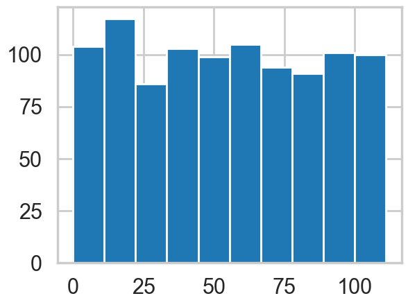
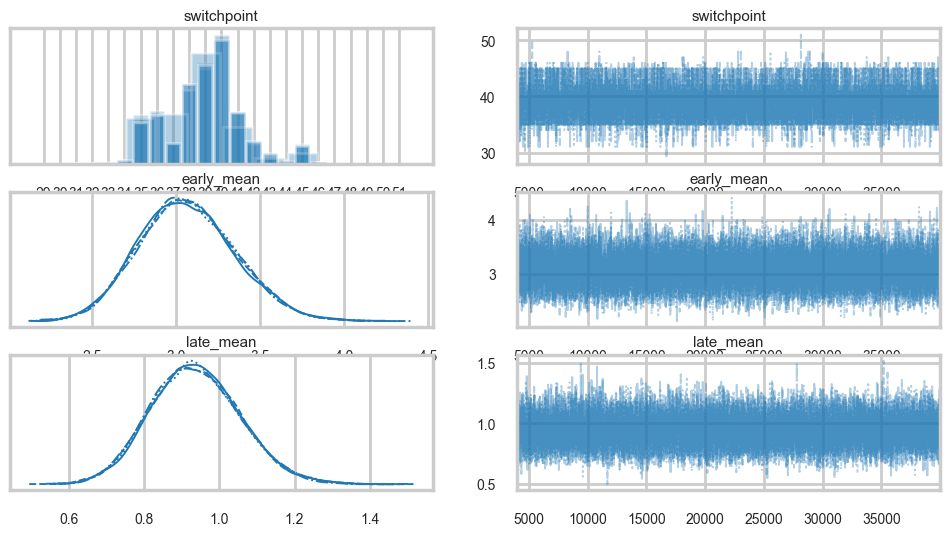
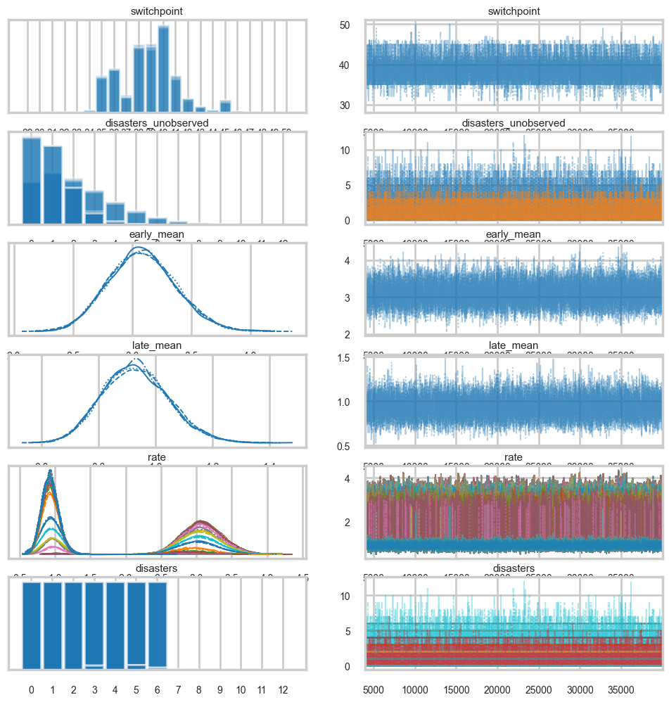
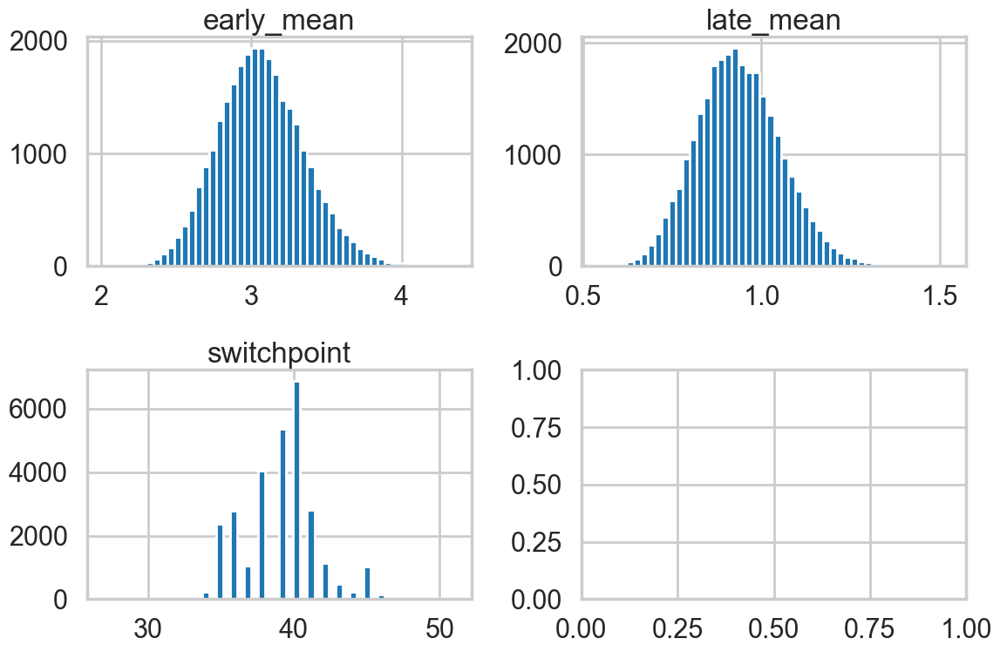
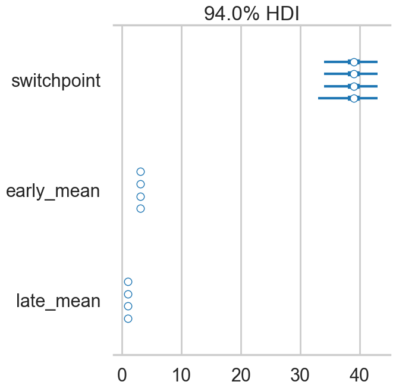
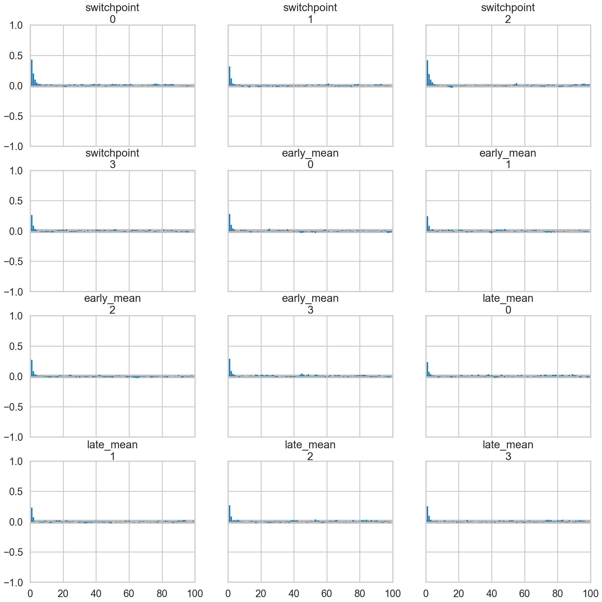
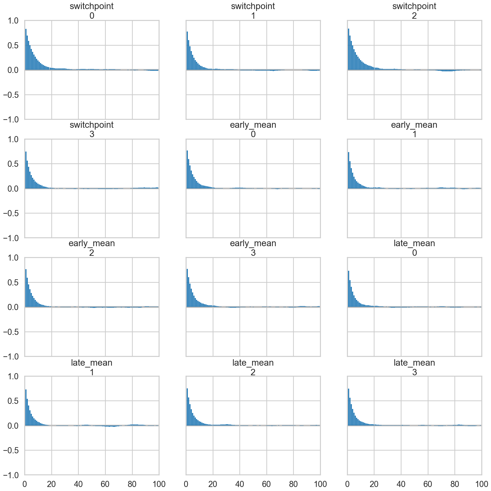
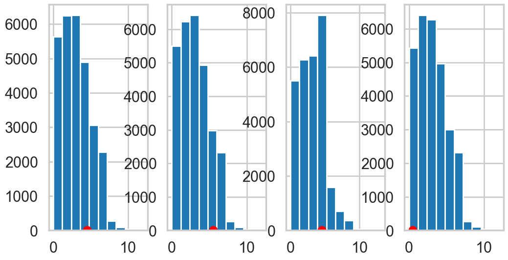

%matplotlib inline
import numpy as np
import scipy as sp
import matplotlib as mpl
import matplotlib.cm as cm
import matplotlib.pyplot as plt
import pandas as pd
pd.set_option('display.width', 500)
pd.set_option('display.max_columns', 100)
pd.set_option('display.notebook_repr_html', True)
import seaborn as sns
sns.set_style("whitegrid")
sns.set_context("poster")Imputation and Convergence
A coal-mine disaster switchpoint model for convergence testing and posterior predictive checks.
mcmc
bayesian
models
Uses a coal-mine disaster switchpoint model to illustrate MCMC convergence testing and posterior predictive imputation. Detects a regulatory change around 1900 with a Poisson model and demonstrates how to assess sampler convergence.
A switchpoint model
This is a model of coal-mine diasaters in England. Somewhere around 1900, regulation was introduced, and in response, miing became safer. But if we were forensically looking at such data, we would be able to detect such change using a switchpoint model. We’d then have to search for the causality.
Data
disasters_data = np.array([4, 5, 4, 0, 1, 4, 3, 4, 0, 6, 3, 3, 4, 0, 2, 6,
3, 3, 5, 4, 5, 3, 1, 4, 4, 1, 5, 5, 3, 4, 2, 5,
2, 2, 3, 4, 2, 1, 3, 2, 2, 1, 1, 1, 1, 3, 0, 0,
1, 0, 1, 1, 0, 0, 3, 1, 0, 3, 2, 2, 0, 1, 1, 1,
0, 1, 0, 1, 0, 0, 0, 2, 1, 0, 0, 0, 1, 1, 0, 2,
3, 3, 1, 1, 2, 1, 1, 1, 1, 2, 4, 2, 0, 0, 1, 4,
0, 0, 0, 1, 0, 0, 0, 0, 0, 1, 0, 0, 1, 0, 1])
n_years = len(disasters_data)
plt.figure(figsize=(12.5, 3.5))
plt.bar(np.arange(1851, 1962), disasters_data, color="#348ABD")
plt.xlabel("Year")
plt.ylabel("Disasters")
plt.title("UK coal mining disasters, 1851-1962")
plt.xlim(1851, 1962);
One can see the swtich roughly in the picture above.
Model
We’ll assume a Poisson model for the mine disasters; appropriate because the counts are low.
\[ y \vert \tau, \lambda_1, \lambda_2 \sim Poisson(r_t)\\ r_t = \lambda_1 \,{\rm if}\, t < \tau \,{\rm else}\, \lambda_2 \,{\rm for}\, t \in [t_l, t_h]\\ \tau \sim DiscreteUniform(t_l, t_h)\\ \lambda_1 \sim Exp(a)\\ \lambda_2 \sim Exp(b)\\ \]
The rate parameter varies before and after the switchpoint, which itseld has a discrete-uniform prior on it. Rate parameters get exponential priors.
import pymc as pm
import arviz as az
from pymc.math import switch
with pm.Model() as coaldis1:
early_mean = pm.Exponential('early_mean', 1)
late_mean = pm.Exponential('late_mean', 1)
switchpoint = pm.DiscreteUniform('switchpoint', lower=0, upper=n_years)
rate = switch(switchpoint >= np.arange(n_years), early_mean, late_mean)
disasters = pm.Poisson('disasters', mu=rate, observed=disasters_data)try:
pm.model_to_graphviz(coaldis1)
except ImportError:
print("graphviz not available, skipping model visualization")graphviz not available, skipping model visualizationLet us interrogate our model about the various parts of it. Notice that our stochastics are logs of the rate params and the switchpoint, while our deterministics are the rate parameters themselves.
coaldis1.free_RVs #stochastics[early_mean, late_mean, switchpoint]try:
type(coaldis1['early_mean_log__'])
except (KeyError, TypeError):
print('Transformed variable access has changed in modern pymc')Transformed variable access has changed in modern pymccoaldis1.deterministics #deterministics[]Labelled variables show up in traces, or for predictives. We also list the “likelihood” stochastics.
# In modern pymc, use model.free_RVs, model.observed_RVs, model.deterministics
{rv.name: rv for rv in coaldis1.free_RVs + coaldis1.observed_RVs + coaldis1.deterministics}{'early_mean': early_mean,
'late_mean': late_mean,
'switchpoint': switchpoint,
'disasters': disasters}coaldis1.observed_RVs[disasters]The DAG based structure and notation used in pymc3 and similar software makes no distinction between random variables and data. Everything is a node, and some nodes are conditioned upon. This is reminiscent of the likelihood being considered a function of its parameters. But you can consider it as a function of data with fixed parameters and sample from it.
You can sample from the distributions in pymc3.
with coaldis1:
plt.hist(pm.draw(coaldis1['switchpoint'], draws=1000));
try:
print(early_mean.transformed, switchpoint.distribution)
except AttributeError:
print('Internal distribution API has changed in modern pymc')Internal distribution API has changed in modern pymctry:
switchpoint.distribution.defaults
except AttributeError:
print('Distribution defaults API has changed in modern pymc')Distribution defaults API has changed in modern pymced=pm.Exponential.dist(1)
print(type(ed))
pm.draw(ed, draws=10)<class 'pytensor.tensor.variable.TensorVariable'>array([1.06307892, 4.1061264 , 1.01125516, 0.04178897, 0.03174314,
1.36572425, 0.77706346, 2.1425485 , 0.52638719, 0.15074759])type(switchpoint), type(early_mean)(pytensor.tensor.variable.TensorVariable,
pytensor.tensor.variable.TensorVariable)Most importantly, anything distribution-like must have a logp method. This is what enables calculating the acceptance ratio for sampling:
try:
switchpoint.logp({'switchpoint':55, 'early_mean_log__':1, 'late_mean_log__':1})
except (AttributeError, TypeError, KeyError):
print('Model logp API has changed in modern pymc. Use model.point_logps() instead.')Model logp API has changed in modern pymc. Use model.point_logps() instead.Ok, enough talk, lets sample:
with coaldis1:
#stepper=pm.Metropolis()
#idata = pm.sample(40000, step=stepper)
idata = pm.sample(40000)Multiprocess sampling (4 chains in 4 jobs)
CompoundStep
>NUTS: [early_mean, late_mean]
>Metropolis: [switchpoint]/Users/rahul/Library/Caches/uv/archive-v0/TDMjbJ0KVXQ0cgT9PEjxe/lib/python3.14/site-packages/rich/live.py:260:
UserWarning: install "ipywidgets" for Jupyter support
warnings.warn('install "ipywidgets" for Jupyter support')
Sampling 4 chains for 1_000 tune and 40_000 draw iterations (4_000 + 160_000 draws total) took 11 seconds.az.summary(idata.sel(draw=slice(4000, None, 5)))| mean | sd | hdi_3% | hdi_97% | mcse_mean | mcse_sd | ess_bulk | ess_tail | r_hat | |
|---|---|---|---|---|---|---|---|---|---|
| switchpoint | 38.998 | 2.467 | 34.000 | 43.000 | 0.021 | 0.016 | 14206.0 | 15864.0 | 1.0 |
| early_mean | 3.067 | 0.285 | 2.549 | 3.610 | 0.002 | 0.001 | 25219.0 | 27077.0 | 1.0 |
| late_mean | 0.937 | 0.118 | 0.716 | 1.158 | 0.001 | 0.001 | 26498.0 | 26264.0 | 1.0 |
idata_burned = idata.sel(draw=slice(4000, None, 5))
az.plot_trace(idata_burned);
A forestplot gives us 95% credible intervals…
az.plot_forest(idata_burned);
az.plot_autocorr(idata_burned);
plt.hist(idata.posterior['switchpoint'].values.flatten());
idata_burned.posterior.to_dataframe().corr()| switchpoint | early_mean | late_mean | |
|---|---|---|---|
| switchpoint | 1.000000 | -0.265152 | -0.244117 |
| early_mean | -0.265152 | 1.000000 | 0.054666 |
| late_mean | -0.244117 | 0.054666 | 1.000000 |
Imputation
Imputation of missing data vaues has a very nice process in Bayesian stats: just sample them from the posterior predictive. There is a very nice process to do this built into pync3..you could abuse this to calculate predictives at arbitrary points. (There is a better way for that, though, using Theano shared variables, so you might want to restrict this process to the situation where you need to impute a few values only).
Below we use -999 to handle mising data:
disasters_missing = np.array([ 4, 5, 4, 0, 1, 4, 3, 4, 0, 6, 3, 3, 4, 0, 2, 6,
3, 3, 5, 4, 5, 3, 1, 4, 4, 1, 5, 5, 3, 4, 2, 5,
2, 2, 3, 4, 2, 1, 3, -999, 2, 1, 1, 1, 1, 3, 0, 0,
1, 0, 1, 1, 0, 0, 3, 1, 0, 3, 2, 2, 0, 1, 1, 1,
0, 1, 0, 1, 0, 0, 0, 2, 1, 0, 0, 0, 1, 1, 0, 2,
3, 3, 1, -999, 2, 1, 1, 1, 1, 2, 4, 2, 0, 0, 1, 4,
0, 0, 0, 1, 0, 0, 0, 0, 0, 1, 0, 0, 1, 0, 1])disasters_masked = np.ma.masked_values(disasters_missing, value=-999)
disasters_maskedmasked_array(data=[4, 5, 4, 0, 1, 4, 3, 4, 0, 6, 3, 3, 4, 0, 2, 6, 3, 3,
5, 4, 5, 3, 1, 4, 4, 1, 5, 5, 3, 4, 2, 5, 2, 2, 3, 4,
2, 1, 3, --, 2, 1, 1, 1, 1, 3, 0, 0, 1, 0, 1, 1, 0, 0,
3, 1, 0, 3, 2, 2, 0, 1, 1, 1, 0, 1, 0, 1, 0, 0, 0, 2,
1, 0, 0, 0, 1, 1, 0, 2, 3, 3, 1, --, 2, 1, 1, 1, 1, 2,
4, 2, 0, 0, 1, 4, 0, 0, 0, 1, 0, 0, 0, 0, 0, 1, 0, 0,
1, 0, 1],
mask=[False, False, False, False, False, False, False, False,
False, False, False, False, False, False, False, False,
False, False, False, False, False, False, False, False,
False, False, False, False, False, False, False, False,
False, False, False, False, False, False, False, True,
False, False, False, False, False, False, False, False,
False, False, False, False, False, False, False, False,
False, False, False, False, False, False, False, False,
False, False, False, False, False, False, False, False,
False, False, False, False, False, False, False, False,
False, False, False, True, False, False, False, False,
False, False, False, False, False, False, False, False,
False, False, False, False, False, False, False, False,
False, False, False, False, False, False, False],
fill_value=-999)with pm.Model() as missing_data_model:
switchpoint = pm.DiscreteUniform('switchpoint', lower=0, upper=len(disasters_masked))
early_mean = pm.Exponential('early_mean', lam=1.)
late_mean = pm.Exponential('late_mean', lam=1.)
idx = np.arange(len(disasters_masked))
rate = pm.Deterministic('rate', switch(switchpoint >= idx, early_mean, late_mean))
disasters = pm.Poisson('disasters', rate, observed=disasters_masked)/Users/rahul/Library/Caches/uv/archive-v0/TDMjbJ0KVXQ0cgT9PEjxe/lib/python3.14/site-packages/pymc/model/core.py:1316: ImputationWarning: Data in disasters contains missing values and will be automatically imputed from the sampling distribution.
warnings.warn(impute_message, ImputationWarning)try:
pm.model_to_graphviz(missing_data_model)
except ImportError:
print("graphviz not available, skipping model visualization")graphviz not available, skipping model visualizationBy supplying a masked array to the likelihood part of our model, we ensure that the masked data points show up in our traces:
with missing_data_model:
stepper=pm.Metropolis()
idata_missing = pm.sample(40000, step=stepper)Multiprocess sampling (4 chains in 4 jobs)
CompoundStep
>Metropolis: [switchpoint]
>Metropolis: [early_mean]
>Metropolis: [late_mean]
>Metropolis: [disasters_unobserved]/Users/rahul/Library/Caches/uv/archive-v0/TDMjbJ0KVXQ0cgT9PEjxe/lib/python3.14/site-packages/rich/live.py:260:
UserWarning: install "ipywidgets" for Jupyter support
warnings.warn('install "ipywidgets" for Jupyter support')
Sampling 4 chains for 1_000 tune and 40_000 draw iterations (4_000 + 160_000 draws total) took 13 seconds.idata_m_burned = idata_missing.sel(draw=slice(4000, None, 5))az.summary(idata_m_burned)/Users/rahul/Library/Caches/uv/archive-v0/TDMjbJ0KVXQ0cgT9PEjxe/lib/python3.14/site-packages/arviz/stats/diagnostics.py:596: RuntimeWarning: invalid value encountered in scalar divide
(between_chain_variance / within_chain_variance + num_samples - 1) / (num_samples)
/Users/rahul/Library/Caches/uv/archive-v0/TDMjbJ0KVXQ0cgT9PEjxe/lib/python3.14/site-packages/arviz/stats/diagnostics.py:991: RuntimeWarning: invalid value encountered in scalar divide
varsd = varvar / evar / 4
/Users/rahul/Library/Caches/uv/archive-v0/TDMjbJ0KVXQ0cgT9PEjxe/lib/python3.14/site-packages/arviz/stats/diagnostics.py:596: RuntimeWarning: invalid value encountered in scalar divide
(between_chain_variance / within_chain_variance + num_samples - 1) / (num_samples)
/Users/rahul/Library/Caches/uv/archive-v0/TDMjbJ0KVXQ0cgT9PEjxe/lib/python3.14/site-packages/arviz/stats/diagnostics.py:991: RuntimeWarning: invalid value encountered in scalar divide
varsd = varvar / evar / 4
/Users/rahul/Library/Caches/uv/archive-v0/TDMjbJ0KVXQ0cgT9PEjxe/lib/python3.14/site-packages/arviz/stats/diagnostics.py:596: RuntimeWarning: invalid value encountered in scalar divide
(between_chain_variance / within_chain_variance + num_samples - 1) / (num_samples)
/Users/rahul/Library/Caches/uv/archive-v0/TDMjbJ0KVXQ0cgT9PEjxe/lib/python3.14/site-packages/arviz/stats/diagnostics.py:991: RuntimeWarning: invalid value encountered in scalar divide
varsd = varvar / evar / 4| mean | sd | hdi_3% | hdi_97% | mcse_mean | mcse_sd | ess_bulk | ess_tail | r_hat | |
|---|---|---|---|---|---|---|---|---|---|
| switchpoint | 38.817 | 2.437 | 35.000 | 43.000 | 0.027 | 0.017 | 8291.0 | 12237.0 | 1.0 |
| disasters_unobserved[0] | 2.160 | 1.795 | 0.000 | 5.000 | 0.017 | 0.010 | 10694.0 | 13068.0 | 1.0 |
| disasters_unobserved[1] | 0.935 | 0.982 | 0.000 | 3.000 | 0.007 | 0.006 | 17941.0 | 20618.0 | 1.0 |
| early_mean | 3.086 | 0.287 | 2.548 | 3.618 | 0.002 | 0.002 | 14854.0 | 16972.0 | 1.0 |
| late_mean | 0.931 | 0.117 | 0.709 | 1.142 | 0.001 | 0.001 | 17153.0 | 18830.0 | 1.0 |
| ... | ... | ... | ... | ... | ... | ... | ... | ... | ... |
| disasters[106] | 0.000 | 0.000 | 0.000 | 0.000 | 0.000 | NaN | 28800.0 | 28800.0 | NaN |
| disasters[107] | 0.000 | 0.000 | 0.000 | 0.000 | 0.000 | NaN | 28800.0 | 28800.0 | NaN |
| disasters[108] | 1.000 | 0.000 | 1.000 | 1.000 | 0.000 | NaN | 28800.0 | 28800.0 | NaN |
| disasters[109] | 0.000 | 0.000 | 0.000 | 0.000 | 0.000 | NaN | 28800.0 | 28800.0 | NaN |
| disasters[110] | 1.000 | 0.000 | 1.000 | 1.000 | 0.000 | NaN | 28800.0 | 28800.0 | NaN |
227 rows × 9 columns
missing_data_model.free_RVs[switchpoint, early_mean, late_mean, disasters_unobserved]az.plot_trace(idata_m_burned);
Convergence of our model
Going back to the original model…
Histograms every m samples
As a visual check, we plot histograms or kdeplots every 500 samples and check that they look identical.
import matplotlib.pyplot as plt
emtrace = idata_burned.posterior['early_mean'].values.flatten()
lmtrace = idata_burned.posterior['late_mean'].values.flatten()
smtrace = idata_burned.posterior['switchpoint'].values.flatten()
fig, axes = plt.subplots(2,2, figsize=(12,8))
axes[0][0].hist(emtrace, bins=50)
axes[0][0].set_title("early_mean")
axes[0][1].hist(lmtrace, bins=50)
axes[0][1].set_title("late_mean")
axes[1][0].hist(smtrace, bins=50)
axes[1][0].set_title("switchpoint")
plt.tight_layout()
Gewecke test
The gewecke test tests that the difference of means of chain-parts written as a Z-score oscilates between 1 and -1
\[\vert \mu_{\theta_1} - \mu_{\theta_2} \vert < 2 \sigma_{\theta_1 - \theta_2} \]
# Geweke diagnostic has been removed from modern pymc/arviz.
# Using az.rhat() for convergence assessment instead.
print('Geweke diagnostic deprecated; see Rhat diagnostics below.')Geweke diagnostic deprecated; see Rhat diagnostics below.# z-score output omitted (Geweke diagnostic deprecated)Here is a plot for early_mean. You sould really be plotting all of these…
# Geweke diagnostic is deprecated in modern pymc.
# See Rhat diagnostics below for convergence assessment.# Geweke z-score plot omitted (diagnostic deprecated).
# Use az.plot_trace() and az.rhat() for convergence assessment.Gelman-Rubin
For this test, which calculates
\[\hat{R} = \sqrt{\frac{\hat{Var}(\theta)}{w}}\]
we need more than 1-chain. This is done through njobs=4 (the defaukt is 2 and reported in pm.summary). See the trace below:
with coaldis1:
stepper=pm.Metropolis()
idata2 = pm.sample(40000, step=stepper, cores=4)Multiprocess sampling (4 chains in 4 jobs)
CompoundStep
>Metropolis: [early_mean]
>Metropolis: [late_mean]
>Metropolis: [switchpoint]/Users/rahul/Library/Caches/uv/archive-v0/TDMjbJ0KVXQ0cgT9PEjxe/lib/python3.14/site-packages/rich/live.py:260:
UserWarning: install "ipywidgets" for Jupyter support
warnings.warn('install "ipywidgets" for Jupyter support')
Sampling 4 chains for 1_000 tune and 40_000 draw iterations (4_000 + 160_000 draws total) took 9 seconds.idata2arviz.InferenceData
-
<xarray.Dataset> Size: 4MB Dimensions: (chain: 4, draw: 40000) Coordinates: * chain (chain) int64 32B 0 1 2 3 * draw (draw) int64 320kB 0 1 2 3 4 ... 39995 39996 39997 39998 39999 Data variables: switchpoint (chain, draw) int64 1MB 41 39 36 39 39 41 ... 40 40 39 39 39 36 early_mean (chain, draw) float64 1MB 3.221 3.221 3.221 ... 3.3 3.3 3.3 late_mean (chain, draw) float64 1MB 0.8123 0.8123 ... 0.8115 0.8115 Attributes: created_at: 2026-03-03T06:44:29.468419+00:00 arviz_version: 0.23.4 inference_library: pymc inference_library_version: 5.28.1 sampling_time: 8.698941946029663 tuning_steps: 1000 -
<xarray.Dataset> Size: 12MB Dimensions: (chain: 4, draw: 40000, scaling_dim_0: 3, accept_dim_0: 3, accepted_dim_0: 3) Coordinates: * chain (chain) int64 32B 0 1 2 3 * draw (draw) int64 320kB 0 1 2 3 4 ... 39996 39997 39998 39999 * scaling_dim_0 (scaling_dim_0) int64 24B 0 1 2 * accept_dim_0 (accept_dim_0) int64 24B 0 1 2 * accepted_dim_0 (accepted_dim_0) int64 24B 0 1 2 Data variables: scaling (chain, draw, scaling_dim_0) float64 4MB 0.5314 ... 3.897 accept (chain, draw, accept_dim_0) float64 4MB 0.01605 ... 0.3862 accepted (chain, draw, accepted_dim_0) float64 4MB 0.0 1.0 ... 1.0 Attributes: created_at: 2026-03-03T06:44:29.474514+00:00 arviz_version: 0.23.4 inference_library: pymc inference_library_version: 5.28.1 sampling_time: 8.698941946029663 tuning_steps: 1000 -
<xarray.Dataset> Size: 2kB Dimensions: (disasters_dim_0: 111) Coordinates: * disasters_dim_0 (disasters_dim_0) int64 888B 0 1 2 3 4 ... 107 108 109 110 Data variables: disasters (disasters_dim_0) int64 888B 4 5 4 0 1 4 3 ... 1 0 0 1 0 1 Attributes: created_at: 2026-03-03T06:44:29.476044+00:00 arviz_version: 0.23.4 inference_library: pymc inference_library_version: 5.28.1
idata2_cut = idata2.sel(draw=slice(4000, None, 5))# gelman_rubin is now az.rhat()
az.rhat(idata2_cut)<xarray.Dataset> Size: 24B
Dimensions: ()
Data variables:
switchpoint float64 8B 1.0
early_mean float64 8B 1.0
late_mean float64 8B 1.0
Attributes:
created_at: 2026-03-03T06:44:29.468419+00:00
arviz_version: 0.23.4
inference_library: pymc
inference_library_version: 5.28.1
sampling_time: 8.698941946029663
tuning_steps: 1000For the best results, each chain should be initialized to highly dispersed starting values for each stochastic node.
A foresplot will show you the credible-interval consistency of our chains..
# forestplot is now az.plot_forest()
az.plot_forest(idata2_cut)array([<Axes: title={'center': '94.0% HDI'}>], dtype=object)
Autocorrelation
This can be probed by plotting the correlation plot and effective sample size
# effective_n is now az.ess()
az.ess(idata2_cut)<xarray.Dataset> Size: 24B
Dimensions: ()
Data variables:
switchpoint float64 8B 1.306e+04
early_mean float64 8B 1.569e+04
late_mean float64 8B 1.644e+04
Attributes:
created_at: 2026-03-03T06:44:29.468419+00:00
arviz_version: 0.23.4
inference_library: pymc
inference_library_version: 5.28.1
sampling_time: 8.698941946029663
tuning_steps: 1000az.plot_autocorr(idata2_cut);
az.plot_autocorr(idata2);
Posterior predictive checks
Finally let us peek into posterior predictive checks: something we’ll talk more about soon.
with coaldis1:
ppc = pm.sample_posterior_predictive(idata_burned)Sampling: [disasters]/Users/rahul/Library/Caches/uv/archive-v0/TDMjbJ0KVXQ0cgT9PEjxe/lib/python3.14/site-packages/rich/live.py:260:
UserWarning: install "ipywidgets" for Jupyter support
warnings.warn('install "ipywidgets" for Jupyter support')
ppc.posterior_predictive['disasters'].shape(4, 7200, 111)This gives us 200 samples at each of the 111 diasters we have data on.
We plot the first 4 posteriors against actual data for consistency…
fig, axes = plt.subplots(1, 4, figsize=(12, 6))
print(axes.shape)
ppc_disasters = ppc.posterior_predictive['disasters'].values.reshape(-1, ppc.posterior_predictive['disasters'].shape[-1])
for obs, s, ax in zip(disasters_data, ppc_disasters.T, axes):
print(obs)
ax.hist(s, bins=10)
ax.plot(obs+0.5, 1, 'ro')(4,)
4
5
4
0